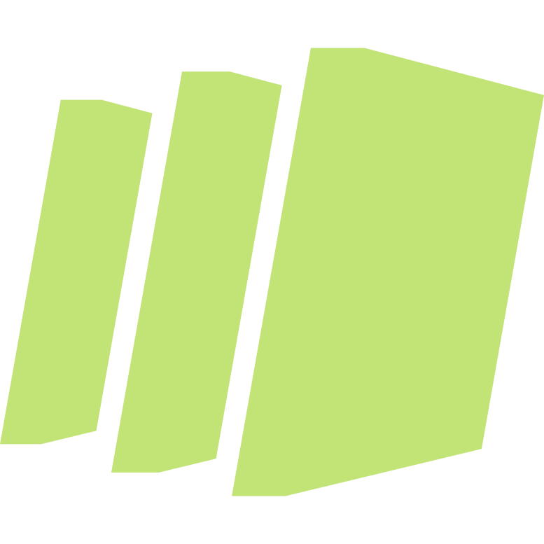

BrainGrid Partner
BrainGrid is the AI Product Planner that helps you shape ideas, plan features, and scope tasks that Claude Code can build right the first time.
Commands
Custom slash commands to automate your workflow

Loading componentsPreparing your experience...